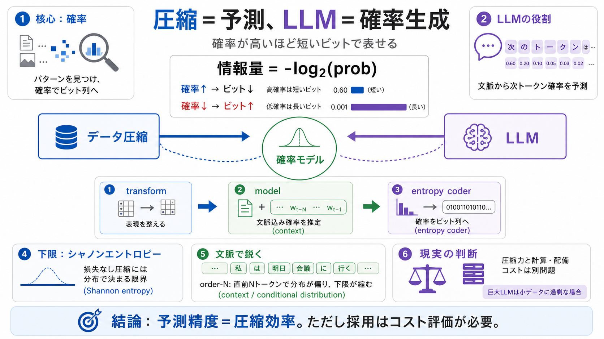

COVER
02 / 14
圧縮の正体
Compression × LLM
圧縮は予測であり、LLMは（ある意味）圧縮器。
確率でビット数が決まるため、両者は同じ数理の上にあります。
（圧縮＝予測 / 圧縮＝確率符号化）
PROBLEM
03 / 14
なぜ同じ？
核心は確率
データ圧縮は「パターン（冗長性）」を探し、確率に基づいてビット列に変換します。
LLMは文脈から次トークンの確率分布を作り、その確率と情報量が結びつきます。
圧縮側
確率が高いほど短く符号化
→ ビット数が減る
LLM側
次トークン確率を予測
→ 予測誤差がビットコストになる
METAPHOR
04 / 14
当てるほど得
賭けの設計
符号化は「当たった（確率が高い）選択を短い札で表す」仕組みです。
だから、どれだけ“正しい確率”を置けるかが圧縮率を決めます。
高確率
少ないビットで表現
低確率
長いビットが必要
結論
予測精度＝圧縮効率
ARCHITECTURE
05 / 14
3つの部品
圧縮器の分解
圧縮を「変換（transform）」「モデル（model）」「エントロピー符号化（entropy coder）」に分けます。
重要なのは、モデルが“正しい確率”をどれだけ推定できるかです。
i / transform
表現の整形（必要なら）
ii / model
文脈込み確率を推定
iii / entropy coder
確率→ビット列へ
EVIDENCE
06 / 14
-log2(prob)
情報量の式
エントロピー符号化は各記号に確率を与え、確率に応じてビット列を作ります。
一般に情報量は
-log2(prob)
に比例し、確率が高いほど短くなります。
確率が高い
prob ↑ → -log2(prob) ↓
確率が低い
prob ↓ → -log2(prob) ↑
DISTINCTION
07 / 14
下限がある
シャノン
シャノンエントロピーは「損失なし圧縮で到達し得る最小ビット数（下限）」として扱えます。
つまり圧縮限界は“データ一般”ではなく、
その確率分布
に依存します。
損失なし
さらに縮むには限界あり
依存先
分布（文脈込みモデル）で決まる
PROCESS
08 / 14
文脈で鋭く
order-N
文脈を入れると確率分布が鋭くなり、エントロピー（下限）が下がります。
直前Nトークンを使う order-N モデルは、圧縮に強い効果を持ちます。
i / order-1
直前1トークンで条件付け
ii / order-N
直前Nトークンで条件付け
iii / 影響
確率が偏る → 下限が縮む
ARCHITECTURE
09 / 14
LLM＝確率生成
圧縮器としてのLLM
LLMの本質は「次トークンの確率分布を出すこと」です。
その分布と実データの差が大きいほど、符号化ではより多くのビットが必要になります。
予測分布
LLM predicts
次トークン確率分布
符号化コスト
Difference costs bits
実際との差がビット増
EVIDENCE
10 / 14
交差エントロピー
学習目的＝圧縮
LLMの学習目標である交差エントロピーは「予測に基づくビット数削減」と同根です。
よって、LLMが上手くなるほど（理想的には）圧縮に有利になります。
LLM学習
交差エントロピー最小化（予測の良さ）
圧縮
実データを確率通りに符号化
→ 平均ビットが減る
COMPARISON
11 / 14
理論と現実
LLMは重い
しかし実運用では、LLMをそのまま圧縮に使うのが難しいケースが多いです。
モデルサイズ・推論コスト・デコーダ側の負担（同等のモデル共有）が障壁になります。
コスト
推論計算、帯域、遅延
配備
エンコード/デコードでモデル共有が必要
PROCESS
12 / 14
判断軸
採用は別問題
理論上の圧縮力と、実際の配備・速度要件は別次元です。
例としてHTTPレスポンスのような小データでは、巨大LLMは過剰になりやすいです。
圧縮力
良い確率推定ほど得
実装
モデル/計算/共有が重い
結論
“常にgzip超え”ではない
CLOSING
13 / 14
要点だけ
One idea
圧縮＝予測
圧縮器の鍵は「モデルによる確率推定」
。
LLMは次トークン確率を出すため、交差エントロピーが圧縮のビット数削減と同根になります。
ただし現実の運用では計算・配備コストがボトルネックです。
（圧縮の数学はLLMと繋がる／採用判断は別途コスト評価が必要）
Bilingual / 用語
entropy coder（エントロピー符号化器）
model（モデル） / context（文脈）
Checklist（読み筋）
確率↑ → ビット↓ / 下限＝エントロピー / 文脈で分布が鋭くなる
REFERENCES
14 / 14
References
No references found